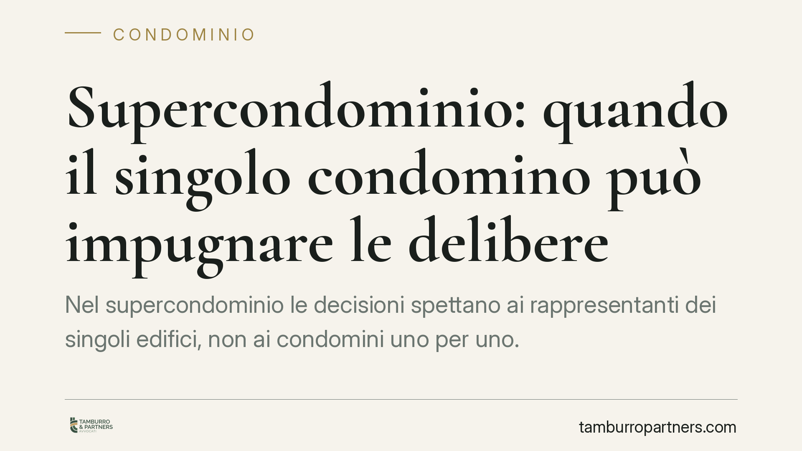

Supercondominio: quando il singolo condomino può impugnare le delibere
Nel supercondominio le decisioni spettano ai rappresentanti dei singoli edifici, non ai condomini uno per uno. Ma quando una delibera lede un diritto individuale, il singolo recupera la legittimazione a impugnarla. Due recenti pronunce della Cassazione chiariscono confini e presupposti, con effetti concreti su chi gestisce complessi immobiliari articolati e sui proprietari che intendono reagire a decisioni ritenute illegittime.

Il fatto e perché conta
Il supercondominio è la struttura che collega più edifici autonomi, ciascuno con un proprio condominio, attraverso beni e servizi comuni: viali, impianti centralizzati, aree verdi, portineria unica. La gestione di questi beni segue regole in parte diverse da quelle del condominio ordinario.
La domanda ricorrente è se il singolo proprietario possa impugnare da solo una delibera dell'assemblea del supercondominio, oppure se tale potere spetti unicamente al rappresentante del proprio edificio. La Cassazione, con l'ordinanza n. 20052/2025 e la sentenza n. 8254/2025, ha definito i margini della legittimazione individuale.
Inquadramento normativo
Il riferimento è l'art. 1117-bis del codice civile, che estende la disciplina del condominio ai complessi con più edifici dotati di parti comuni. Per la gestione, l'art. 67 delle disposizioni di attuazione del codice civile introduce il meccanismo della rappresentanza: quando i partecipanti sono più di sessanta, ciascun condominio designa un rappresentante che interviene nell'assemblea del supercondominio per le decisioni sulle parti comuni.
Il rappresentante, in questo schema, esprime la volontà del proprio edificio. Il singolo condomino, di regola, non partecipa direttamente all'assemblea supercondominiale e non ne vota le delibere.
Resta però fermo il regime di impugnazione dell'art. 1136 del codice civile, letto insieme all'art. 1137, che disciplina annullabilità e termini. La giurisprudenza recente precisa come queste regole si applichino quando la decisione tocca la sfera individuale del proprietario.
Cosa dice la Cassazione
Il principio di fondo è che la delibera del supercondominio, assunta tramite i rappresentanti, vincola i singoli condomini. La legittimazione a impugnare spetta quindi, in via ordinaria, al rappresentante.
Il singolo recupera però il potere di impugnare in due situazioni tipiche. La prima: quando la delibera non riguarda la mera gestione delle parti comuni, ma incide direttamente su un diritto soggettivo del condomino, ad esempio modificando la ripartizione delle spese che grava su di lui o intaccando la proprietà esclusiva. In questi casi la decisione esorbita dai poteri del rappresentante e il proprietario agisce in proprio.
La seconda: quando il rappresentante resta inerte o agisce in conflitto con gli interessi dell'edificio rappresentato. Qui il condomino può sostituirsi, ma a condizioni rigorose, che vanno dimostrate e non presunte.
Le pronunce confermano inoltre la distinzione tra delibere nulle e annullabili. Le prime, affette da vizi radicali (oggetto impossibile o illecito, lesione di diritti individuali su beni di proprietà esclusiva), sono impugnabili senza limiti di tempo e da chiunque vi abbia interesse. Le seconde, affette da vizi procedurali o di competenza, vanno impugnate nel termine di trenta giorni previsto dall'art. 1137 cod. civ.
Implicazioni pratiche
Per il proprietario, la distinzione non è teorica. Impugnare una delibera meramente gestionale, su cui difetta la legittimazione individuale, espone al rischio di un'azione dichiarata inammissibile, con aggravio di costi.
Viceversa, davanti a una decisione che incide sul proprio diritto, attendere oltre i trenta giorni nella convinzione che debba muoversi il rappresentante può far decadere dalla possibilità di reagire, se il vizio è di annullabilità.
Per l'amministratore e il rappresentante di edificio, le pronunce impongono attenzione al perimetro dei poteri: deliberare su materie che toccano diritti individuali senza il consenso degli interessati espone la delibera a contestazione.
Cosa fare in concreto
- Qualifica il vizio prima di agire. Verifica se la delibera è nulla (nessun termine) o annullabile (trenta giorni dalla comunicazione o dalla riunione): da questo dipende l'intera strategia.
- Accerta la legittimazione. Stabilisci se la decisione incide su un tuo diritto soggettivo o riguarda la sola gestione comune, perché solo nel primo caso puoi impugnare da solo.
- Documenta l'inerzia del rappresentante se intendi sostituirti a lui: raccogli solleciti, comunicazioni e verbali che provino l'inattività o il conflitto di interessi.
- Rispetta i termini. Non lasciar decorrere i trenta giorni confidando in un intervento altrui; il termine è perentorio.
- Richiedi copia del verbale e del regolamento per ricostruire competenze, criteri di riparto e modalità di convocazione.
Consigliamo di far valutare la singola delibera prima di avviare qualsiasi contenzioso: la linea tra vizio insanabile e vizio da impugnare nei termini è spesso sottile e decisiva.
Disclaimer
Contributo informativo a cura di Tamburro & Partners - Avv. Giuseppe Tamburro. Non costituisce parere legale.
Ogni condominio ha una storia a sé.
Se gestisci un'amministrazione e vuoi un confronto su una specifica questione condominiale, scrivi allo studio. Ti rispondiamo entro un giorno lavorativo.